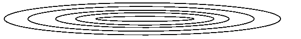
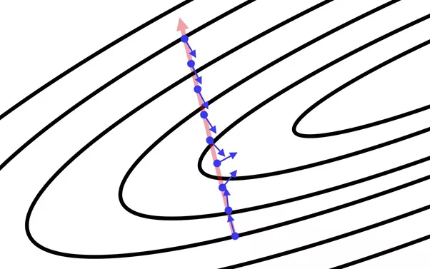
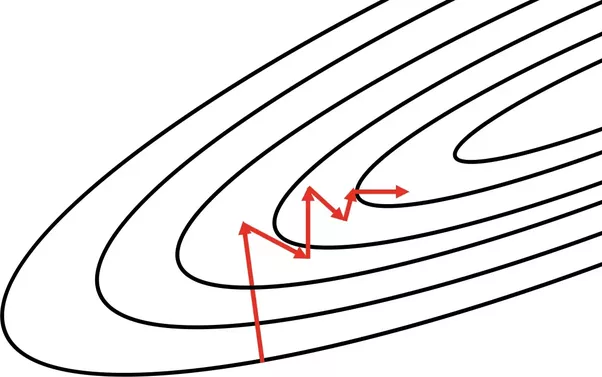

What is an ill-conditioned matrix?1
A matrix can represent a mapping from one space to another space. The conditioning number of a matrix gives us the ratio of how crazy this mapping can be. The conditioning number is the ratio of the largest singular value to the smallest singular value.
A matrix is ill-conditioned if the conditioning number is very high. What this means is that calculations using this matrix are prone to introduce numerical errors that can overwhelm your calculation. Computers cannot hold an infinite amount of information. Numbers in a floating point representation can only hold so much precision.
For example if 𝐴 is ill-conditioned and I try to solve 𝐴𝑥=𝑏 using Gauss-Jordan elimination I will quickly pick up numerical errors, and then those numerical errors are used on the next step which creates even larger errors, which are used on the next step and so on.
So what do you do when you have an ill-conditioned matrix? You reformulate your problem by doing something called preconditioning. This allows you to work in a space where your transformations aren’t as badly behaved and errors can be kept under control.
Poorly conditioned Hessian matrix2
Condition number of a matrix is the ratio of the largest singular value to the smallest singular value. A matrix is ill-conditioned if the condition number is very high, usually indicating that (i) the lowest singular value is orders of magnitude smaller than the highest one, and (ii) columns/rows of the matrix are heavily correlated with each other leading to redundancies and a matrix that is pretending to be of a higher rank than it truly is.
Hessian encodes the second derivatives of a function with respect to all pairs of variables. So, if there are n inputs to a function, the gradient is 𝑛 -dimensional and the Hessian is 𝑛x𝑛-dimensional. In machine learning, the inputs are usually the features and the function is usually a loss function we are trying to minimize. When the Hessian is ill-conditioned, it means the basins of the loss function have contours that are very long “ellipsoids” rather than being close to “circular”.

This causes problems for first-order optimization methods like gradient descent (𝑤=𝑤−𝜂∇𝑤) which need to follow a very zigzag path to the minimum. The first figure below shows the gradient directions at various points on a straight line through the parameter space. Notice how the directions away from the center are nearly orthogonal to the useful direction of descent. The second figure shows the zigzag path gradient descent has to take if the Hessian is ill-conditioned, the function contours are stretched out, and the gradients often point to directions that might not be the best way to descend to the minimum.


You would think that second-order optimization would solve this problem. It sort of does if the Hessian is not too ill-conditioned. However, a poorly conditioned Hessian is problematic because a typical second-order optimization requires inversion of a Hessian: 𝑤=𝑤−𝜂𝐻−1∇𝑤 (First-order optimization methods therefore assume 𝐻=𝐼, the identity matrix i.e. the problem is ideally conditioned for gradient descent-like methods.) Inverse of 𝐻with SVD decomposition 𝐻=𝑈Σ𝑉𝑇 is given as 𝐻−1=𝑈Σ−1𝑉𝑇. Here Σ is a diagonal matrix with singular values on the diagonal. Note, if the Hessian is ill-conditioned, the inverse can be numerically unstable since the smallest singular values blow up on inversion. A singular value of 10−6 appears as 106 in Σ−1. Thus, the more ill-conditioned the Hessian is, the more numerically unstable its inverse. Any noise in computing the Hessian such as that introduced by using stochastic versions of descent updates or using minibatches amplifies tremendously when the Hessian is inverted. Methods likes L-BFGS get around this by maintaining a low-rank approximation of the (inverse) Hessian which is better suited for ill-conditioned problems as well as saves computation and space required to implement second-order optimization.